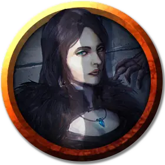

Кереста Грызущая камни
Keresta Delvingstone
Средняя Нежить (Перевертыш), законно-злая, именной НИП

Класс Доспеха 16 (природный доспех)
Хиты 144 (17к8 + 68)
Скорость 30 футов
| мод | спас | ||
|---|---|---|---|
| СИЛ | 18 | +4 | +4 |
| ЛОВ | 18 | +4 | +9 |
| ТЕЛ | 18 | +4 | +4 |
| мод | спас | ||
|---|---|---|---|
| ИНТ | 17 | +3 | +3 |
| МДР | 15 | +2 | +7 |
| ХАР | 18 | +4 | +9 |
Навыки Восприятие +7, Скрытность +9
Сопротивление урону некротическая энергия; дробящий, колющий, рубящий от немагических атак
Чувства тёмное зрение 120 футов, пассивное Восприятие 17
Языки все, известные при жизни
Опасность 13 (10000 опыта)
Бонус мастерства +5
Особенности
Перевертыш. Если Кереста не находится под солнечным светом и не стоит в текущей воде, она может действием превратиться в Крошечную летучую мышь или Среднее облако тумана, или же принять свой истинный облик.
Находясь в облике летучей мыши, Кереста не может говорить, его скорость ходьбы равна 5 футам, и у неё скорость полёта 30 футов. Вся его статистика за исключением размера и скорости остается той же самой. Все, что она носит, превращается вместе с ним, а то, что она несет — нет. Она принимает свой истинный облик, если умирает.
Находясь в облике тумана, Кереста не может совершать действий, говорить и манипулировать предметами. Она ничего не весит, обладает скоростью полёта 20 футов, может парить и может входить в пространство враждебных существ и останавливаться там. Кроме того, если через некое пространство может проходить воздух, то это же может сделать и туман, без протискивания, хотя и не может проходить сквозь воду. Она совершает с преимуществом спасброски Силы, Ловкости и Телосложения, и обладает иммунитетом к немагическому урону, за исключением урона, который она получает, находясь под солнечными лучами.
Легендарное сопротивление (3/день). Если Кереста проваливает спасбросок, она может вместо этого сделать спасбросок успешным.
Туманный побег. Если хиты Кересты опускаются до 0 за пределами места отдыха, она вместо того, чтобы потерять сознание, превращается в туманное облако (как сказано в описании особенности Перевертыш), при условии, что она не находится под солнечными лучами или в текущей воде. Если он не может превратиться, она уничтожается.
Пока у Кереста в туманном облике 0 хитов, она не может возвращаться в облик вампира, и обязана вернуться в место отдыха в течение 2 часов, иначе будет уничтожен. Достигнув места отдыха, она принимает облик вампира. После этого она становится парализованным, пока не восстановит хотя бы 1 хит. Проведя 1 час в месте отдыха с 0 хитов, она восстанавливает 1 хит.
Регенерация. Кереста восстанавливает 20 хитов в начале своего хода, если у неё есть хотя бы 1 хит, и она не находится ни под солнечными лучами ни в текущей воде. Если Кереста получает урон излучением или урон от святой воды, эта особенность не действует в начале следующего хода Кересты.
Паучье лазание. Кереста может лазать по сложным поверхностям, включая потолки, без совершения проверок характеристик.
Слабости вампира. Кереста обладает следующими слабостями:
• Запрет. Кереста не может войти в жилище без приглашения одного из обитателей.
• Урон от текущей воды. Кереста получает урон кислотой 20, если оканчивает ход в текущей воде.
• Кол в сердце. Если колющее оружие, изготовленное из дерева, вонзить в сердце Кересты, пока она недееспособен в своем месте отдыха, Кереста станет парализованной, пока кол не вынут.
• Гиперчувствительность к солнечному свету. Кереста получает урон излучением 20, если начинает ход под солнечным светом. Находясь на солнечном свету, она совершает с помехой броски атаки и проверки характеристик.
Использование заклинаний. Кереста является заклинателем 9-го уровня. Её базовой характеристикой является Мудрость (Сл спасброска от заклинаний 15, +7 к атакам заклинаниями). У неё подготовлены следующие заклинания жреца:
• Заговоры (неограниченно): указание [guidance], починка [mending], сопротивление [resistance], чудотворство [thaumaturgy];
• 1 уровень (4 ячейки): порча [bane], приказ [command], нанесение ран [inflict wounds], луч болезни [ray of sickness];
• 2 уровень (3 ячейки): глухота/слепота [blindness/deafness], луч слабости [ray of enfeeblement], божественное оружие [spiritual weapon];
• 3 уровень (3 ячейки): восставший труп [animate dead], проклятие [bestow curse], рассеивание магии [dispel magic], духовные стражи [spirit guardians];
• 4 уровень (3 ячейки): усыхание [blight], защита от смерти [death ward], предсказание [divination];
• 5 уровень (1 ячейка): преграда жизни [antilife shell], разрушительная волна [destructive wave].
Приют Ванрака - логово Кересты, и по всему уровню могут наблюдаться следующие местные эффекты:
• Области тусклого света или тьмы заполняются поднимающимся туманом. Он исчезает, когда на него падают лучи света, но вновь сгущается за пределами освещенного места. В некоторых местах туман висит постоянно и свет на него не воздействует.
• Большое количество крыс и летучих мышей. В тех местах, где о них не упоминаются конкретно, их наличие выдают кучки помета и постоянно слышно, как они бегают и пищат во тьме.
После уничтожения Кересты туман рассеивается, а крысы и летучие мыши постепенно вымирают до обычных своих норм.
Действия
Мультиатака (только в облике вампира). Кереста совершает две атаки, только одна из которых может быть укусом.
Безоружный удар (только в облике вампира). Рукопашная атака оружием: +9 к попаданию, досягаемость 5 футов, одно существо. Попадание: Дробящий урон 8 (1к8 + 4). Вместо причинения урона вампир может схватить цель (Сл высвобождения 18).
Укус (только в облике вампира или летучей мыши). Рукопашная атака оружием: +9 к попаданию, досягаемость 5 футов, одно согласное существо или существо, схваченное Керестой, недееспособное или опутанное. Попадание: Колющий урон 7 (1к6 + 4) плюс урон некротической энергией 10 (3к6). Максимум хитов цели уменьшается на количество, равное полученному урону некротической энергией, а Кереста восстанавливает такое же количество хитов. Уменьшение хитов длится до тех пор, пока цель не окончит продолжительный отдых. Цель умирает, если этот эффект уменьшает максимум её хитов до 0. Гуманоид, убитый этим способом, а после закопанный в землю, восстает следующей ночью в качестве порождения вампира, находящегося под контролем Кересты.
Очарование. Кереста нацеливается на одного гуманоида, которого видит в пределах 30 футов. Если цель видит вампира, она должна преуспеть в спасброске Мудрости Сл 17 от этой магии, иначе станет очарованной Керестой. Очарованная цель считает Кересту верным другом, о котором нужно заботиться, и которого нужно защищать. Несмотря на то, что цель не находится под контролем Кересты, она выполняет его просьбы и искренне прилагает все нужные усилия, и будет согласной целью для укуса Керестой.
Каждый раз, когда Кереста или спутники вампира делают цели что-нибудь плохое, цель может повторить спасбросок, оканчивая эффект на себе при успехе. В противном случае эффект длится 24 часа, пока Кереста не будет уничтожена, пока Кереста с целью не окажутся на разных планах существования, или пока Кереста не окончит эффект бонусным действием.
Дети ночи (1/день). Кереста магическим образом призывает 2к4 роя крыс [swarm of rats] или летучих мышей [swarm of bats], при условии, что на небе нет солнца. Находясь на открытом воздухе, Кереста может вместо этого призвать 3к6 гигантских многоножек [giant centipede]. Вызванные существа приходят через 1к4 раунда, действуют как союзники Кересты и подчиняются её устным командам. Звери остаются на 1 час, пока Кереста не умрет, или пока Кереста не отпустит их бонусным действием.
Легендарные действия
Кереста может совершить 3 легендарных действия, выбирая из представленных ниже вариантов. За один раз можно использовать только одно легендарное действие, и только в конце хода другого существа. Кереста восстанавливает использованные легендарные действия в начале своего хода.
Перемещение. Кереста перемещается на расстояние, не превышающее его скорость, не провоцируя атаки.
Безоружный удар. Кереста совершает один безоружный удар.
Укус (стоит 2 действия). Кереста совершает одну атаку укусом.
Описание
Кереста выросла на улицах Глубоководья, и ей было не привыкать к лишениям. В надежде улучшить свою жизнь, она стала авантюристкой и отправилась искать славу и богатство в Подгорье, встретив свою участь в логове вампира и став порождением вампира под его командованием.
После того как Ванрак уничтожил вампира и завоевал его логово, он взял Кересту под свое крыло. Полная тьмы и утрат, Кереста тянулась к Шар, словно мотылёк на пламя, и в итоге поднялась став вампиром-жрецом злой богини.
Теперь она возглавляет обескровленный культ Шар в Приюте Ванрака и намеревается отправить группу с заданием уничтожить Утренние Шпили, храм Латандера (бога восхода и перерождений) в Глубоководье. Помимо этого, она готовится и к разрушению Дома Луны - храма Селуны, которую считает повинной в гибели Ванрака Луннозвездного.